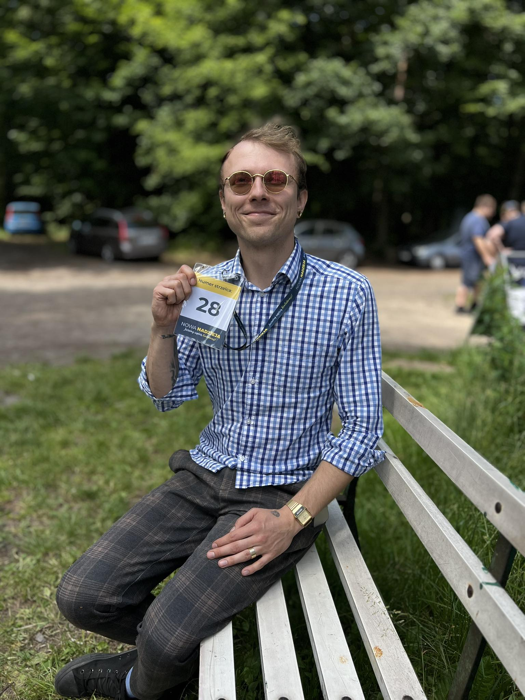

I.
Wolność gospodarcza
Państwo powinno być nocnym stróżem, nie natrętnym gospodarzem. Najlepszą pomocą dla przedsiębiorcy jest nieprzeszkadzanie mu.
· Rybnik · Anno Domini MMXXVI ·
Prezes Okręgu Rybnickiego Konfederacji
Rybniczanin z wyboru i z przekonania. Urodziłem się w cieniu kopalnianych szybów, a dorastałem wśród ludzi, którzy nauczyli mnie, że przyzwoitość i ciężka praca to dwie strony tej samej monety.
Zawodowo od kilkunastu lat związany z sektorem prywatnym, gdzie na własnej skórze przekonałem się, jak bardzo państwo potrafi przeszkadzać tym, którzy chcą budować. Stąd moja droga do Konfederacji — i stąd moja codzienna praca dla Rybnika.
Wierzę, że wolność jednostki, niskie podatki i silne lokalne wspólnoty to nie slogany, lecz fundamenty, bez których żadne miasto nie rozkwitnie. Rybnik zasługuje na więcej niż zarządzanie upadkiem — zasługuje na ambicję.
Państwo powinno być nocnym stróżem, nie natrętnym gospodarzem. Najlepszą pomocą dla przedsiębiorcy jest nieprzeszkadzanie mu.
Każda złotówka zostawiona w kieszeni rybniczanina pracuje lepiej niż ta przepuszczona przez urzędniczą machinę.
Rodzina, sąsiedztwo, parafia, stowarzyszenie — oto prawdziwy kapitał miasta. Tego nie zbuduje się z Warszawy.
Bez korzeni nie ma skrzydeł. Szanuję śląskie dziedzictwo, klasyczną kulturę i cywilizacyjny dorobek Zachodu.

Kiedy nie spieram się o przyszłość miasta, siadam do fortepianu. Chopin, Paderewski, czasem odrobina Gershwina — muzyka jest dla mnie tym, czym dla innych modlitwa w kościele lub spacer w lesie.
Ubieram się elegancko, ale bez krawata. Lubię dobrą książkę, starannie zaparzoną kawę i długie wieczorne rozmowy, które nie kończą się żadnym postem w mediach społecznościowych.
Biuro Okręgu Rybnickiego Konfederacji otwarte jest dla każdego mieszkańca. Chętnie wysłucham, porozmawiam, pomogę w miarę możliwości.